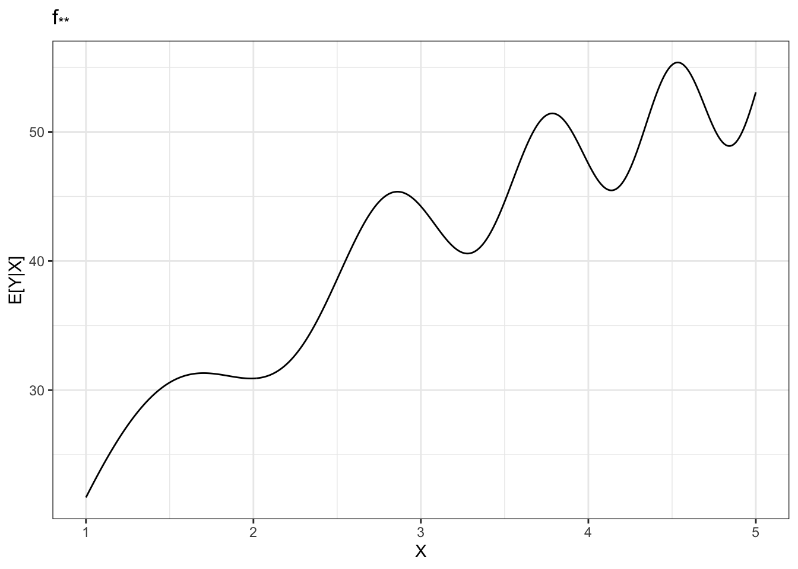
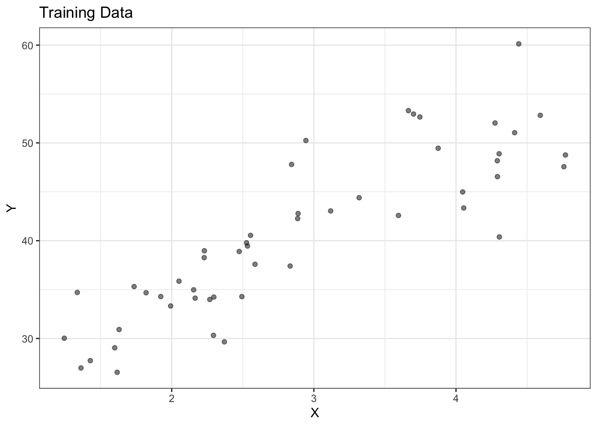
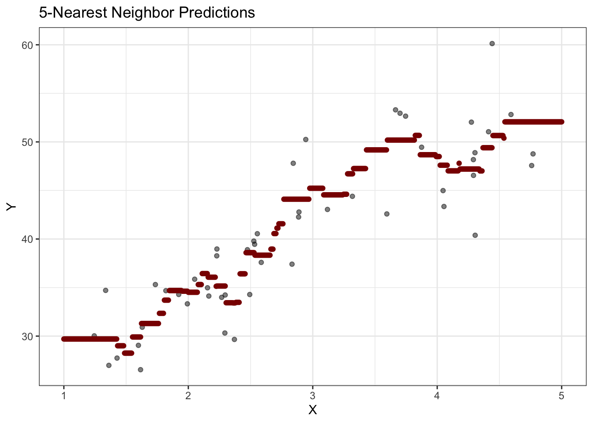
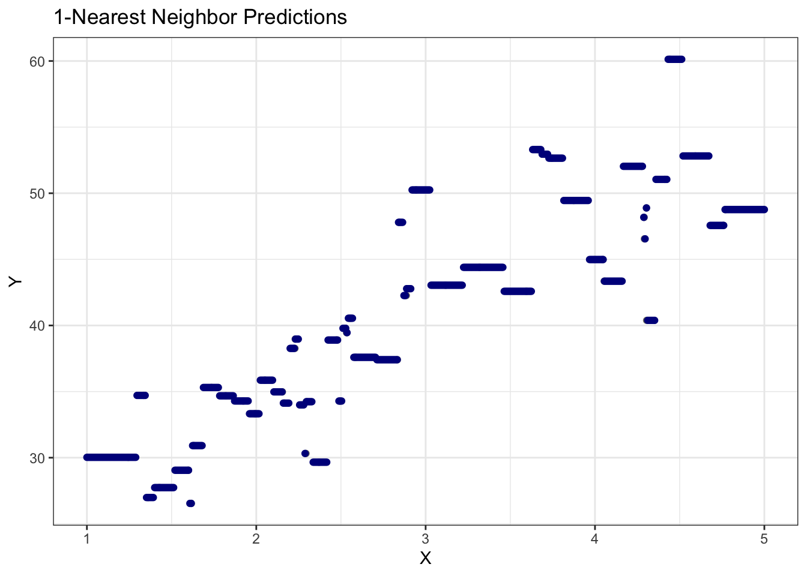
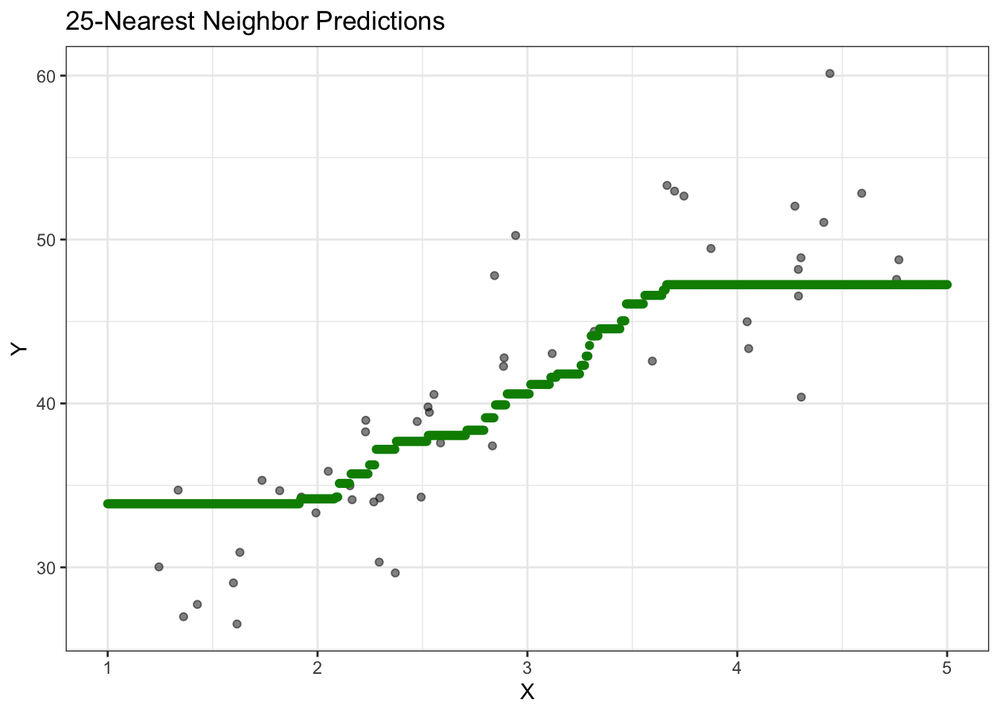
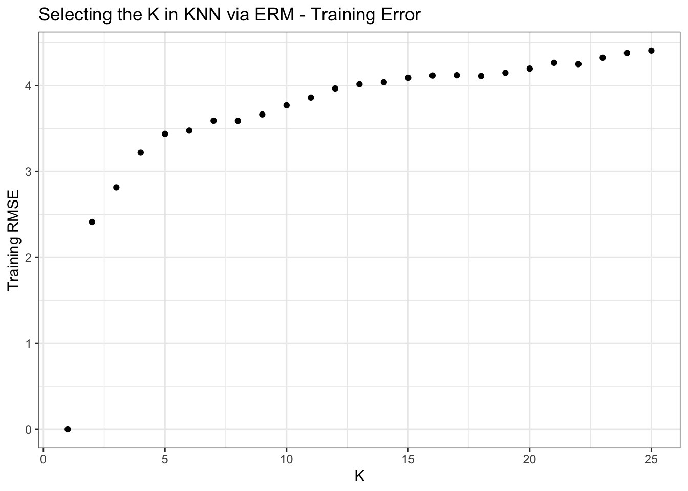
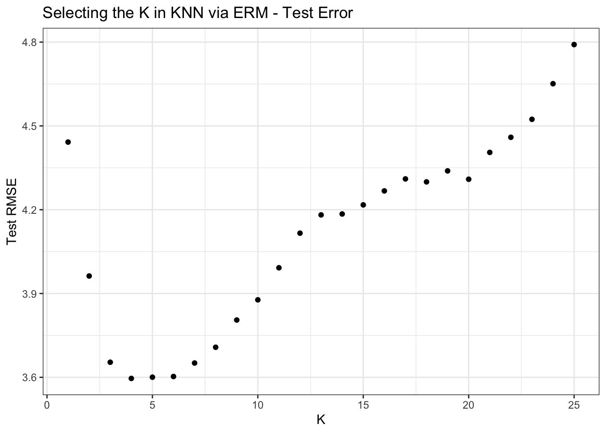
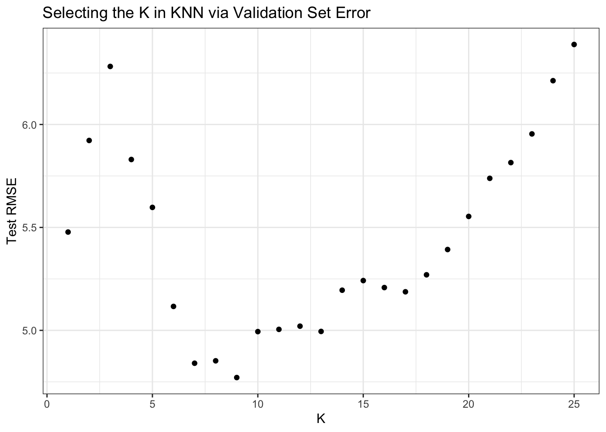
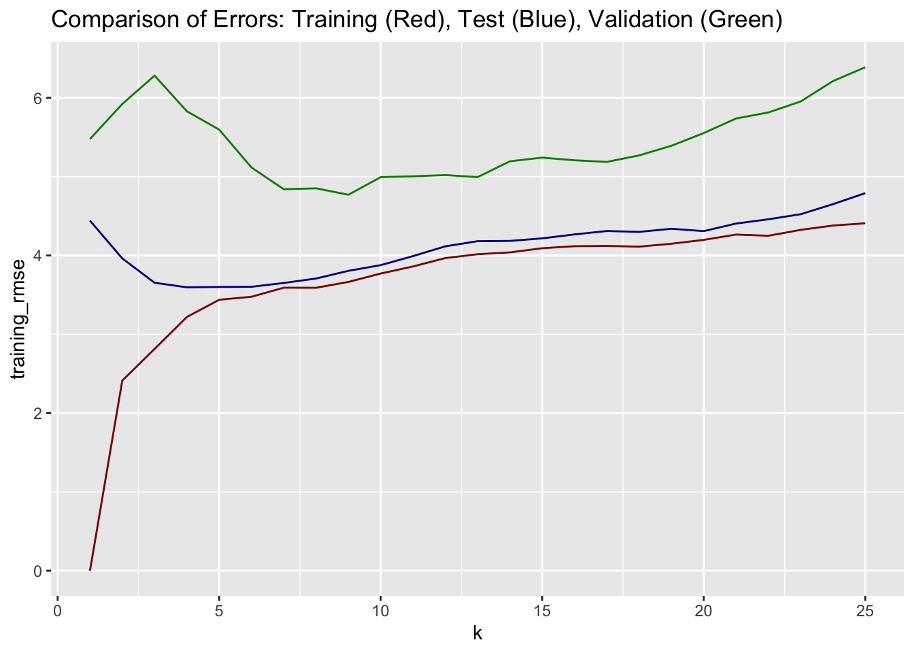
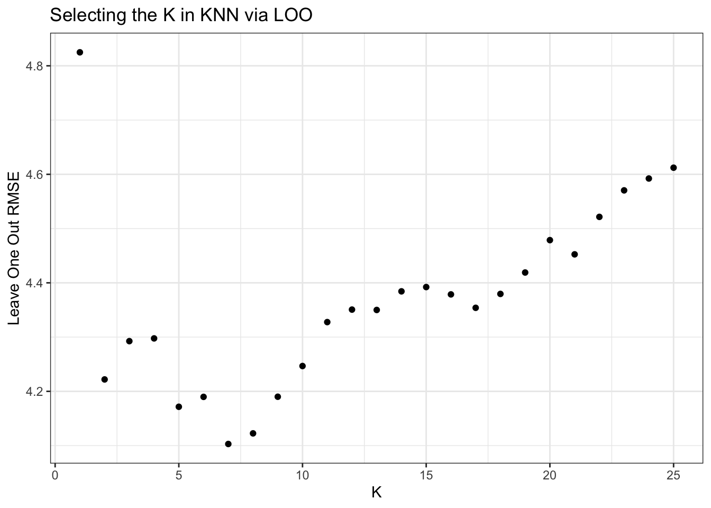

Notes for Lecture #05: Unit I. ML Fundamentals: Resampling Methods for Machine Learning
Outline:
Today, we’re going to take some of the theoretical decompositions we talked about last time and put them into practice. Recall that we argued- as a matter of definition and accounting-that test error could be decomposed as something like:
\[\text{Test Error} = \text{Irreducible Error} + \text{Structural Error} + \text{Estimation Error}\]
in general and, in the specific case of MSE, we can equate these to:
\[\E[\text{TestMSE}] = \sigma_Y^2 + \underbrace{\E[(f_{**} - f_*)^2]}_{\text{Bias}^2} + \underbrace{\E[(f_* - \hat{f})^2]}_{\text{Variance}}\]
where \(f_{**}\) is Nature’s model, i.e., the most perfect model any mind could ever devise with unlimited computing power, data and time; \(f_*\) is the best model within a certain class \(\Fcal\), e.g., the best possible linear model or the best decision tree; and \(\hat{f}\) is the model we actually wind up selecting (often in an ERM manner).
This construction suggests that we face a balancing challenge in deciding what model category to use:
- Picking \(\Fcal\) to be large enough to make the gap between \(f_*\) and \(f_{**}\) small; while also
- Picking \(\Fcal\) to be small enough to keep the estimation error under control. Ceteris paribus, a ‘smaller’ \(\Fcal\) bounds the gap between \(\hat{f}\) and \(f_*\) more tightly and reduces our variance.
Let’s talk through some scenarios:
- The ‘true’ relationship is linear and we are fitting a line (\(\Fcal = \text{Linear Models}\)). Here, the approximation error is zero because \(f_{**} \in \Fcal\) so all the error we have a chance at handling is variance. This is the ‘classical’ version of OLS theory where concepts like ‘BLUE’ come into play.
- The ‘true’ relationship is quadratic, but we are still fitting a line. Here, there is some approximation error that can’t be avoided, but the variance is (basically) the same as before, so we should expect to do worse.
- Because we want to avoid approximation error, we now try a much larger set of models–\(\Fcal = \text{All 5th Order Polynomials}\). Approximation error goes back to zero, but at the cost of greatly increased variance. Potentially, this scenario leads to worse error than ‘just fit a line’ because the variance cost is too high for the bias reduction.
- We go back to fitting a line to a relationship that is actually non-linear. But now we have absolutely massive data (\(n \approx \infty\)). As the data set gets larger, the variance goes to zero and we are left with only approximation error. In this case, even with ‘infinite’ data, our error doesn’t ever go to zero.
- Finally, now armed with our huge data set, we go back to the set of all polynomials. Here, variance still goes to zero, but our model is sufficiently flexible that our approximation also goes to zero and we get ‘effectively optimal’ predictions, leaving only the irreducible error. We can essentially get \(\hat{f} = f_* = f_{**}\).
This reveals the general value of big data in ML. It gives us a source of leverage to manage variance; we can then use our choice of \(\Fcal\) to make bias (near) zero. Put those together and we have great predictions. If we don’t have much data, the variance remains untamed and we can have arbitrarily terrible predictions.
We see this joint scaling of model complexity and data throughout contemporary ML practice. Big data centers are required not only to process big data sets per se but also to fit the big models that those big data sets allow. (The exact form and rate of this scaling is a topic of significant economic interest: if doubling data set size and 4x-ing compute cost leads to a 2% increase in accuracy, is it worth it? More generally, if performance grows sub-linearly in cost, there is a point of diminishing economic return that could be hit. Alternatively, if twice as much cost gives four times as much performance, it might make sense to scale in perpetuity.)
So let’s think through other ways that \(\Fcal\) can be ‘bigger’ or ‘smaller’.
- Fitting a model with non-linear terms (quadratics, cubics, trig functions, exponentials) gives a bigger model class.
- Fitting a model with more features gives a bigger model class. The set of 6 feature linear models is larger than the set of linear models that only uses the first feature. (To see this, note that a model with slope 2 and one feature is essentially the same as the six feature model with coefficients \((2, 0, 0, 0, 0, 0)\).)
- When fitting a decision tree, a tree with more levels is more complex than a smaller tree.
- Bigger (more parameter) neural networks are larger ceteris paribus.
- Any others?
In each of these, note that \(\Fcal\) is a choice that you, the modeler, make, not a feature of the data. Bigger data makes bigger \(\Fcal\) a good choice, but it is possible to fit use \(\Fcal\) on a small-ish data set. (We just have overfitting danger.)
In PS#01, you will take a look at \(K\)-nearest neighbors. Let’s take a look at how the \(K\) in \(K\)-NN drives model complexity.
For concreteness, let’s suppose we have data generated from a rather crazy looking underlying process (\(f_{**}\)):
\(\E[Y|X] = f_{**}(X) = 2X + 3 + 4\sin(X^2) + 9\sqrt{\log(1 + X^4)}\)
This gives a somewhat odd shape, but one where a linear fit would not be necessarily awful:
Of course, in practice, we do not really get to see this relationship and we instead just get a noisy set of observations.
OBSERVED <- data.frame(X = runif(50, 1, 5)) |>
mutate(EY = 2 * X + 3 + 4 * sin(X^2) + 16 * sqrt(log(1 + X^4)),
Y = EY + rnorm(50, sd=4)) |>
select(-EY)
BASE_PLOT <- ggplot(OBSERVED, aes(x=X, y=Y)) +
xlab(expression(X)) +
ylab(expression(Y)) +
theme_bw() +
geom_point(alpha=0.5)
BASE_PLOT + ggtitle("Training Data")
Instead of fitting a line, let’s instead break out \(K\)-NN. Recall that \(K\)-NN works by taking the average of the \(K\) ‘nearest neighbors’ to the test point, i.e., the point at which we want to make a prediction. While finding nearest neighbors in higher dimensions is a bit tricky (are all directions equally important?), in 1D this is pretty straightforward:
library(tidymodels)
TEST_X <- data.frame(X = seq(1, 5, length.out=501))
knn5 <- nearest_neighbor(neighbors = 5,
# No weights - treat all neighbors equally
weight_func="rectangular") |>
set_engine("kknn") |>
set_mode("regression") |>
fit(Y ~ X, data = OBSERVED)
Yhat_knn5 <- augment(knn5, new_data=TEST_X)
BASE_PLOT + geom_point(aes(y=.pred),
color="red4",
data=Yhat_knn5) +
ggtitle("5-Nearest Neighbor Predictions")
A pretty reasonable fit. We see here that this model is ‘jumpy’ at points where the set of nearest neighbors changes, and flat otherwise. (Why?)
Let’s compare this to some other values: what happens if we set \(K=1\)?
knn1 <- nearest_neighbor(neighbors = 1,
# No weights - treat all neighbors equally
weight_func="rectangular") |>
set_engine("kknn") |>
set_mode("regression") |>
fit(Y ~ X, data = OBSERVED)
Yhat_knn1 <- augment(knn1, new_data=TEST_X)
BASE_PLOT + geom_point(aes(y=.pred),
color="blue4",
data=Yhat_knn1) +
ggtitle("1-Nearest Neighbor Predictions")
Much more wiggly! This makes sense - by only ‘averaging’ one neighbor (doing no averaging really), we aren’t really taming the variance in the data at all.
How about if we make \(K\) much larger, say 25?
library(tidymodels)
TEST_X <- data.frame(X = seq(1, 5, length.out=501))
knn5 <- nearest_neighbor(neighbors = 5,
# No weights - treat all neighbors equally
weight_func="rectangular") |>
set_engine("kknn") |>
set_mode("regression") |>
fit(Y ~ X, data = OBSERVED)
Yhat_knn5 <- augment(knn5, new_data=TEST_X)
BASE_PLOT + geom_point(aes(y=.pred),
color="red4",
data=Yhat_knn5) +
ggtitle("5-Nearest Neighbor Predictions")
A pretty reasonable fit. We see here that this model is ‘jumpy’ at points where the set of nearest neighbors changes, and flat otherwise. (Why?)
Let’s compare this to some other values: what happens if we set \(K=1\)?
knn1 <- nearest_neighbor(neighbors = 25,
# No weights - treat all neighbors equally
weight_func="rectangular") |>
set_engine("kknn") |>
set_mode("regression") |>
fit(Y ~ X, data = OBSERVED)
Yhat_knn25 <- augment(knn1, new_data=TEST_X)
BASE_PLOT + geom_point(aes(y=.pred),
color="green4",
data=Yhat_knn25) +
ggtitle("25-Nearest Neighbor Predictions")
Not surprisingly, this is much smoother since, at any point, we are averaging 25 points. (From basic statistical theory, we know that our variance is 1/25th of what we had for \(K=1\)-NN.) But this is probably a bit too smooth. We’ve over averaged and are missing the sinusoidal ‘wiggles’ that are present in \(f_{**}\).
How might we pick \(K\)? We have talked a lot about ERM, so let’s try it here. We can compute the training error at lots of different \(K\)s and pick the one that works best.
make_training_set_predictions_knn <- function(k){
knn_k <- nearest_neighbor(neighbors = k,
# No weights - treat all neighbors equally
weight_func="rectangular") |>
set_engine("kknn") |>
set_mode("regression") |>
fit(Y ~ X, data = OBSERVED)
augment(knn_k, new_data=OBSERVED) |>
rename(Y_hat = .pred) |>
summarize(training_rmse = sqrt(mean((Y - Y_hat)^2))) |>
mutate(k=k)
}
map(1:25, make_training_set_predictions_knn) |>
bind_rows() |>
ggplot(aes(x=k, y=training_rmse)) +
geom_point() +
xlab(expression(K)) +
ylab("Training RMSE") +
theme_bw() +
ggtitle("Selecting the K in KNN via ERM - Training Error")
Hmmm…. This seems fishy. This seems to really suggest suggest that \(K=1\) is ideal. But do we want that? And is \(K=1\) giving zero error really as great as it sounds?
Well - we can’t normally do this - but we have the option to look at test error in simulation land. Let’s see how it does.
BIG_TEST_SET <- data.frame(X = seq(1, 5, length.out=5001)) |>
mutate(EY = 2 * X + 3 + 4 * sin(X^2) + 16 * sqrt(log(1 + X^4)),
Y = EY + rnorm(5001, sd=2))
make_test_set_predictions_knn <- function(k){
knn_k <- nearest_neighbor(neighbors = k,
# No weights - treat all neighbors equally
weight_func="rectangular") |>
set_engine("kknn") |>
set_mode("regression") |>
fit(Y ~ X, data = OBSERVED)
augment(knn_k, new_data=BIG_TEST_SET) |>
rename(Y_hat = .pred) |>
summarize(test_rmse = sqrt(mean((Y - Y_hat)^2))) |>
mutate(k=k)
}
map(1:25, make_test_set_predictions_knn) |>
bind_rows() |>
ggplot(aes(x=k, y=test_rmse)) +
geom_point() +
xlab(expression(K)) +
ylab("Test RMSE") +
theme_bw() +
ggtitle("Selecting the K in KNN via ERM - Test Error")
\(K=1\) is a terrible choice here! ERM lead us astray.
Why did this happen? The answer here is overfitting in its purest form.
\(K=1\) gave us 0 error. Why did this happen? Why wouldn’t this hold true on the test set? These are questions you will explore in PS#01.
Hold Out Method
So from the above, we see that something around \(K\approx 6\) seems optimal. But we cheated here and can’t generally just look at the test set. What should we do instead?
Well - we have to fake it so we can make it. If we don’t / can’t look at a true test set, we need to do the next best thing.
We started with 40 data points and used them all to fit the model. Because \(K\)-NN had all 40 points in its memory, our training error was a terrible proxy for test error. Instead, we need to hold-out part of our data set to test the model. 40 data points is a lot, so this will be painful, but it’s what we have to do.
Let’s set aside 10 points (25%) from our original data set to form a validation set and fit our model on the remaining 30 points as a reduced test set.
hold_out_ix <- sample(40, 10)
hold_out_set <- OBSERVED[hold_out_ix,]
training_set <- OBSERVED[-hold_out_ix,]
make_validation_set_predictions_knn <- function(k){
knn_k <- nearest_neighbor(neighbors = k,
# No weights - treat all neighbors equally
weight_func="rectangular") |>
set_engine("kknn") |>
set_mode("regression") |>
fit(Y ~ X, data = training_set)
augment(knn_k, new_data=hold_out_set) |>
rename(Y_hat = .pred) |>
summarize(validation_rmse = sqrt(mean((Y - Y_hat)^2))) |>
mutate(k=k)
}
map(1:25, make_validation_set_predictions_knn) |>
bind_rows() |>
ggplot(aes(x=k, y=validation_rmse)) +
geom_point() +
xlab(expression(K)) +
ylab("Test RMSE") +
theme_bw() +
ggtitle("Selecting the K in KNN via Validation Set Error")
This isn’t great! But it is better than our ‘pure ERM’ approach. We will probably pick a \(K\) around the ‘true’ right answer of 6 and, if we compare the \(Y\)-axes across our plots, our validation error at any \(K\) is a more reasonable approximation to the actual test error. Let’s put them all on a plot together to make this clearer:
reduce(list(
map(1:25, make_test_set_predictions_knn) |>
bind_rows() ,
map(1:25, make_training_set_predictions_knn) |>
bind_rows(),
map(1:25, make_validation_set_predictions_knn) |>
bind_rows()
), inner_join, join_by(k)) |>
ggplot(aes(x=k)) +
geom_line(aes(y=training_rmse), color="red4") +
geom_line(aes(y=test_rmse), color="blue4") +
geom_line(aes(y=validation_rmse), color="green4") +
ggtitle("Comparison of Errors: Training (Red), Test (Blue), Validation (Green)")
So the validation error is consistently a bit over pessimistic, but generally a better guess as to the shape of the true test error.
Why is the green error consistently a bit too high here? We’re only using 32 instead of 40 data points, so things are a bit worse, but with a larger data set, the effects might not be so profound.
But going to 32 data points was expensive - not computationally, but statistically. We definitely wound up comparing worse models. Could we do better?
What if we could hold out only 1 data point? The model would be better, but the error measure would be worse… But we could repeat this process for each point and aggregate (average) our results across all 40 fits.
make_leave_one_out_predictions <- function(k){
N <- NROW(OBSERVED)
map(seq(N), \(N){
OBSERVED_LESS_ONE <- OBSERVED[-N, ]
HELD_OUT_POINT <- OBSERVED[N, , drop=FALSE]
knn_k <- nearest_neighbor(neighbors = k,
# No weights - treat all neighbors equally
weight_func="rectangular") |>
set_engine("kknn") |>
set_mode("regression") |>
fit(Y ~ X, data = OBSERVED_LESS_ONE)
augment(knn_k, new_data=HELD_OUT_POINT) |>
rename(Y_hat = .pred) |>
mutate(k=k)
}) |> bind_rows() |>
summarize(loo_rmse = sqrt(mean((Y - Y_hat)^2)),
k=first(k))
}
map(1:25, make_leave_one_out_predictions) |>
bind_rows() |>
ggplot(aes(x=k, y=loo_rmse)) +
geom_point() +
xlab(expression(K)) +
ylab("Leave One Out RMSE") +
theme_bw() +
ggtitle("Selecting the K in KNN via LOO")